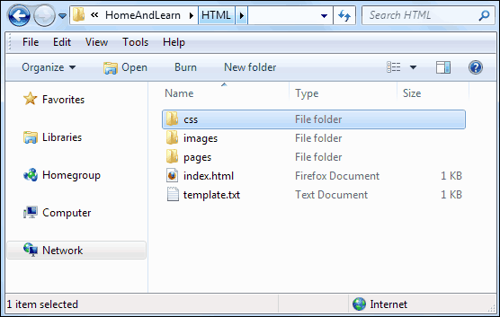

External Stylesheets
The CSS you have been using so far has been placed in the HEAD section of your HTML code. A better place to put all your CSS, however, is in an external file. (By this, we mean a separate file.)
In a new text file type the following (click File > New in Notepad, if you're using this):
This is going to be our external stylesheet. It has just one Class set up, a Pseudo Class for the hover style. Underlines are switched off when the mouse is over the link, and the text colour turns red.
The main thing to notice here is that we don't need any opening and closing STYLE tags: you just type your selectors and curly brackets.
Click File > Save in Notepad to save your work. When the dialogue box appears, navigate to your HTML folder and create a new folder called css. Move inside of this folder. In the File Name box, type styles.css. Make sure that Save as type read All Files, if you're using Windows. After you have saved your new document, your explorer window should look like this:
When you go one folder up to your HTML folder you should have this:

So that a web page can see our new external stylesheet, you need to add some code in the HEAD section.
Open up your about.html code. Add the following in the HEAD section:
<LINK REL = Stylesheet TYPE ="text/css" HREF ="../css/styles.css">
Your code should look like this:

To link to an external stylesheet, then, you start with the word LINK, after a left-pointy bracket. The other three attributes are these:
REL=
TYPE=
HREF=
The REL stands for relationship, meaning the relationship between this about.html file and the document you're going to be pointing to. REL can take many other values, but only Stylesheet is commonly used.
The TYPE refers to something called a MIME type. For stylesheets, you need the value "text/css".
The final attribute is HREF. This is the path to your CSS file. It is used in exactly the same way as for hyperlinks. Note the path for us:
HREF ="../css/styles.css"
The link is in the about.html page. The location of the stylesheet is one folder up, hence the two dots and the forward slash, followed by the folder name css. If our stylesheet was in the same folder as the about.html page we could have just done this:
HREF ="styles.css"
But save your work and load up your about.html page in your browser. Move your mouse over your hyperlink. If all went well then it should turn red, and the underline will disappear. If it doesn't, make sure your file referencing is OK, and that you have your stylesheet in the right place.
Placing all your CSS code in an external stylesheets is much better than placing it in a particular web page, as you can just make changes to the external stylesheet and it will affect the whole site. For example, if your H1 headings are all blue, it could take you many hours of work to change them to red, if you have placed CSS code in all the web pages. With an external stylesheet, you only have to make one change and your site is updated! So if you can, always use external stylesheets.
In the next section, you'll learn how to turn a HTML list into a navigation
bar.